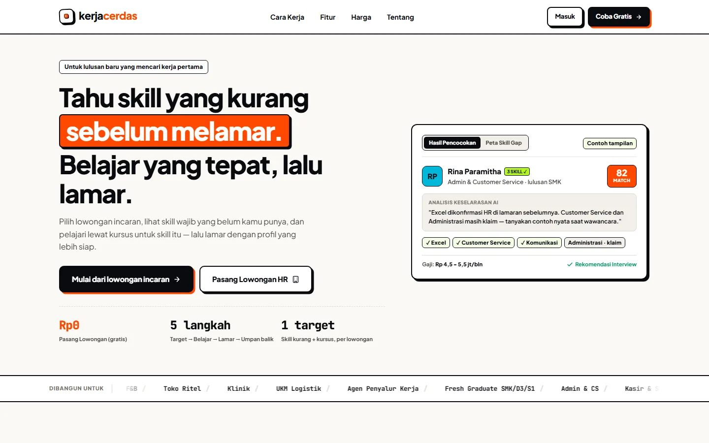
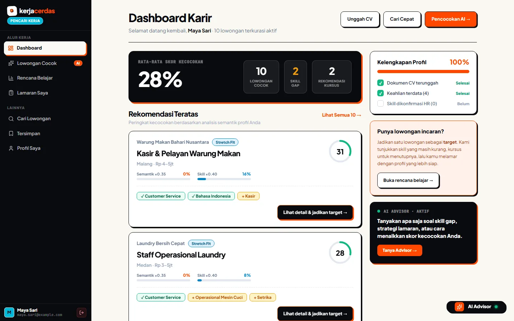
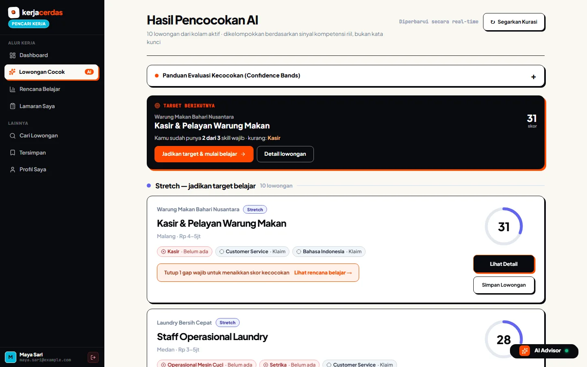
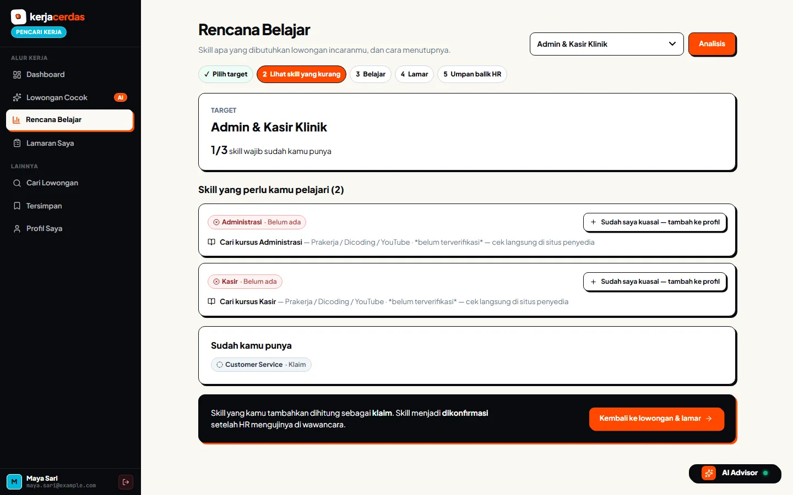
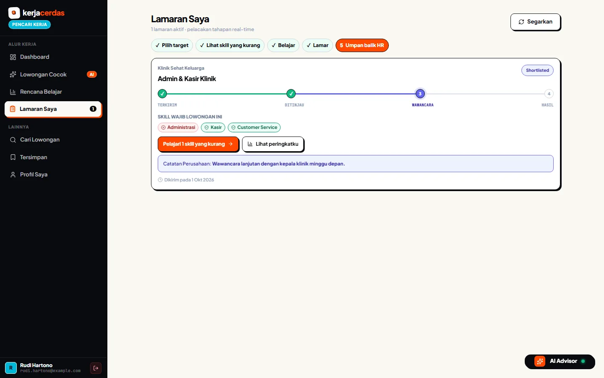
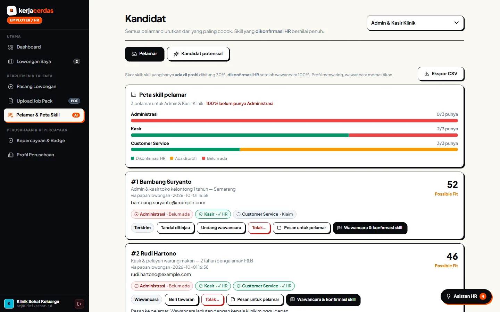

Stop applying blind.KerjaCerdas shows what you are missing before you apply.
KerjaCerdas shows you which skills you are missing before you apply, then helps you close the gap.
1920×1080 · 26s · 7 beats · silent, captions on screen
Moves: The window rises into place and settles. The headline lands with it; the second line follows.
in: cut in
Moves: Slow push toward the ranked list. The cursor glides to "Lihat detail & jadikan target" and clicks.
in: crossfade inside the window
Moves: Punch in on the job card until the red "Kasir · Belum ada" chip is readable, hold for a full second, then the cursor clicks "Lihat rencana belajar".
in: crossfade inside the window
Moves: Slow push toward the two skills to learn. The cursor moves to "Sudah saya kuasai" on the Kasir row and clicks.
in: crossfade inside the window
Moves: Slow push toward the stage tracker at "Wawancara". The cursor comes to rest on the note from the employer.
in: crossfade inside the window
Moves: Slow push from the skill map down to candidate #1. The cursor clicks "Wawancara & konfirmasi skill".
in: crossfade inside the windowMoves: The window eases back and dims behind the title. One move, then still.
in: crossfade